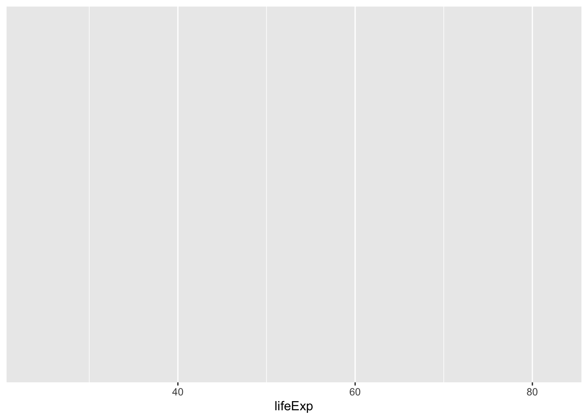
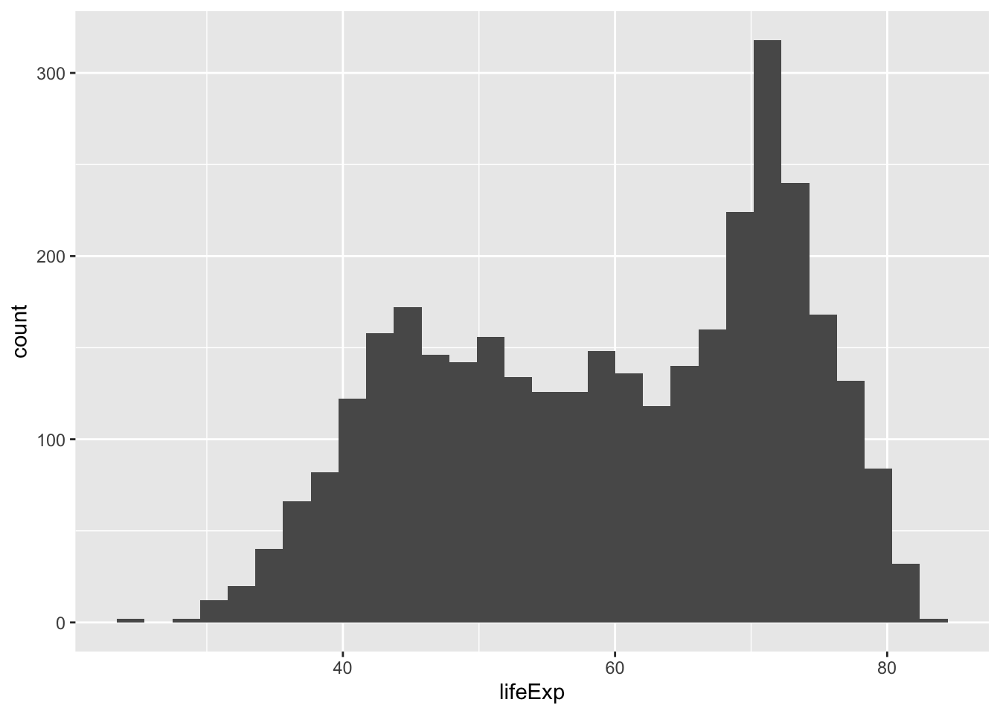
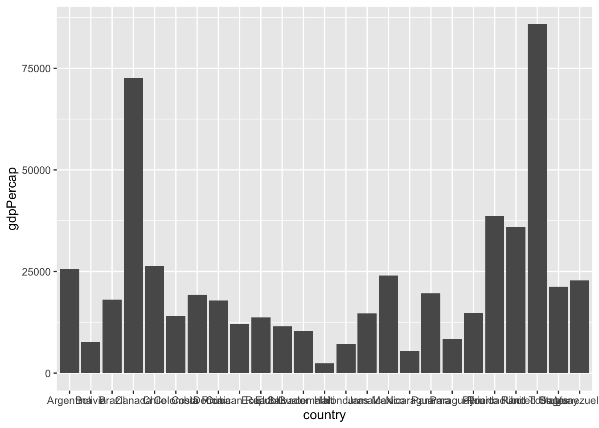
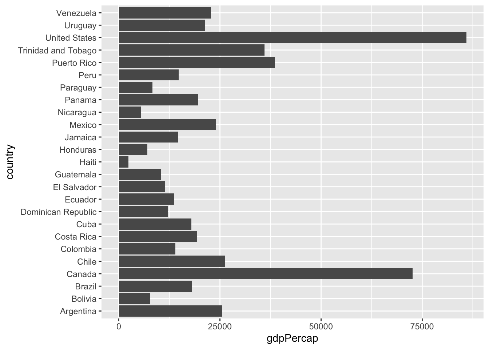

8 Introduction to Visualization
Let’s start off with an example plotting the distribution of life expectancy in the gapminder dataset. The first thing we do is call the ``ggplotfunction. This function lets R know that we're creating a new plot, and any of the arguments we give theggplot() function are the global options for the plot, which means that they apply to all layers on the plot.
We’ll pass in two arguments to ggplot. First, we tell ggplot what data we want to show on our graph. In this case, the dataset we want to use as the basis for our figure is the familiar gapminder dataset. For the second argument, we pass in the aes() function, which tells ggplot how variables in the data map on to aesthetic properties of the figure. In other words, we use aes() to specify what variables we want to represent on our visualization, and where to represent them with respect to the visualizations’ axes.
In this case, we will tell ggplot to plot the “lifeExp” column of the gapminder data frame on the x axis. We don’t need to specify a y axis, since we’ll be drawing a histogram which will automatically show the relevant count on the y-axis.
Before we start, make sure that you have the ggplot library loaded if you don’t already:
library(ggplot2)Then, let’s draw our histogram with the following code:
ggplot(data=gapminder, aes(x=lifeExp))
Notice that we have the beginnings of a graph, and the X axis is labeled as we specified, but we don’t have a graph yet. That’s because we need to tell ggplot how we want to visually represent the data, which we do by adding a geom layer. Since we want a histogram, we will use the geom_histogram function:
ggplot(data=gapminder, aes(x=lifeExp))+
geom_histogram()## `stat_bin()` using `bins = 30`. Pick better value with `binwidth`.
While the histogram is a useful tool for visualizing the distribution of a single categorical variable, what if we want to compare the gdp per capita of the countries in the dataset? For that, we could use a bar (or column) plot.
To simplify things, let’s look at data only from the most recent year and only from countries in the Americas.
We’ll create a new object that meets those criteria with the following:
gapminder_small<-filter(gapminder, year==2007, continent=="Americas")Now, we can use the gapminder_small object in our call to ggplot. Since we want to produce a bar graph rather than histogram, we’ll use the geom_col function. We’ll plot countries on the x axis (which are listed in alphabetic order by default) and gdp per capita on the y-axis:
ggplot(data=gapminder_small, aes(x=country, y=gdpPercap))+
geom_col()
This is somewhat useful, but with so many bars plotted, it’s impossible to read all the x-axis labels. A quick fix in situations like this is to add the coord_flip() function to the end of the plot code:
ggplot(data=gapminder_small, aes(x=country, y=gdpPercap))+
geom_col()+
coord_flip()
The examples here are to just get you started with ggplot, and the process of making graphics in R. Later in the workshop, we’ll go into a lot more depth on a variety of more advanced visualization topics, especially those relevant to work with geospatial data.
For now, the main takeaway points are that we can use ggplot2 to make plots, and that we should think about graphics in layers. Thinking in these terms makes the process of visualizing data in ggplot relatively intuitive.